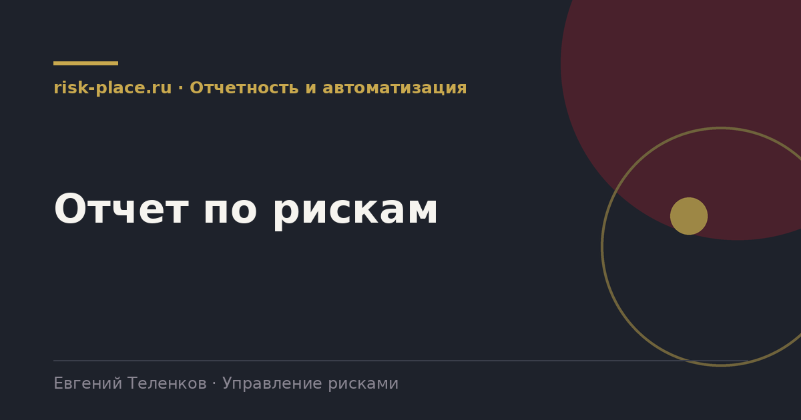

Главная · Библиотека · Отчетность и автоматизация · Отчет по рискам
Библиотека · Отчетность и автоматизация
Отчет это не описание реестра, а инструмент принятия решений. Разница видна с первой страницы.

Один документ на всех не работает.
| Адресат | Периодичность | Содержание |
|---|---|---|
| Правление или комитет по рискам | Ежемесячно или ежеквартально | Риски, требующие решений, статус мероприятий, индикаторы, реализовавшиеся события |
| Совет директоров или комитет по аудиту | Ежеквартально | Пять-семь существенных рисков, изменения профиля, соответствие аппетиту, оценка системы |
| Владельцы рисков и руководители | Ежемесячно | Свои риски, свои мероприятия, свои сроки, свои индикаторы |
Первая и главная, отчет описывает состояние вместо того, чтобы запрашивать решение. Руководитель прочитал и не понял, чего от него хотят. Проверка простая, если в отчете нет ни одного вопроса к читателю, он не нужен.
Вторая, отсутствие сравнения. Цифра без предыдущего значения не информативна. Восемь красных рисков это много или мало, стало лучше или хуже, определить по такому отчету невозможно.
Третья, приложение с полным реестром. Оно создает ощущение объема работы и одновременно снижает вероятность, что прочитают основную часть.
Четвертая, отсутствие цены. Риск, влияние которого выражено только в баллах, для руководителя абстрактен. Даже грубая денежная оценка меняет характер разговора.
Практический прием, который работает лучше любых советов по оформлению. Напишите отчет, затем вычеркните все, по чему не будет принято решение и что не изменилось с прошлого раза. Обычно остается треть, и это правильная треть.
Второй прием, начинать не с методологии и не с общей картины, а с самого неприятного факта периода. Внимание руководителя максимально в первые тридцать секунд, и тратить их на описание структуры реестра расточительно.
Частые вопросы
Одна форма для любого вопроса
Расскажем о ближайших датах, предложим формат под ваш состав участников и назовем порядок бюджета.
Предпочитаете почту — напишите на info@risk-place.ru. Адрес: Москва, улица Скаковая, 32с2.
 risk-
risk-